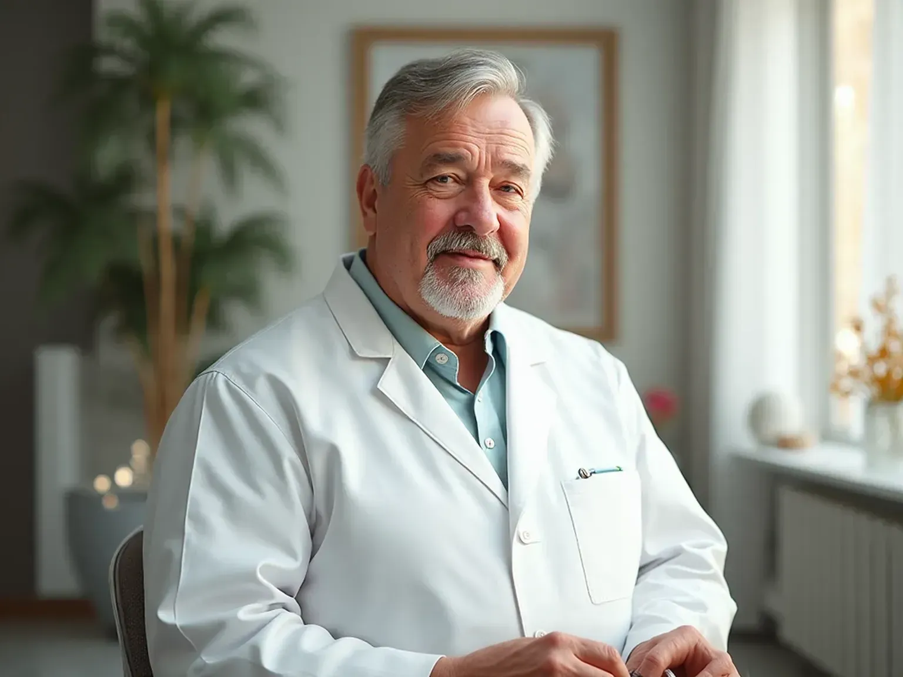

+38(068) 79 72 782
+38(068) 79 72 782Лечение наркомании Киев
Мы рядом — Выход есть


Бесплатная консультация, работаем круглосуточно 24/7
Мы рядом — Выход есть
Наркомания — это тяжёлое, хроническое заболевание, которое не только разрушает здоровье, но и полностью меняет жизнь человека, лишая его воли и надежды. В состоянии зависимости человек часто чувствует себя изолированным и бессильным, и именно поэтому ему требуется немедленная и профессиональная помощь. Самостоятельные попытки справиться с зависимостью, как правило, заканчиваются срывами и усугублением состояния, так как без медицинской поддержки организм не может справиться с мучительной ломкой, а психика — с глубокими причинами зависимости.
Лечение наркомании в Киеве в клинике UmbrellaPlus основано на комплексном подходе, который охватывает все аспекты заболевания. Наша программа включает в себя несколько ключевых этапов, каждый из которых является необходимым шагом на пути к выздоровлению. В первую очередь, это дезинтоксикация — процедура, которая позволяет безопасно и эффективно очистить организм от токсинов и снять физическую тягу. Этот шаг создаёт прочную основу для дальнейшей работы.
Но главное — это психологическая реабилитация. Именно она помогает навсегда избавиться от зависимости на ментальном уровне. Наши опытные психологи работают с пациентами, чтобы найти и устранить коренные причины их болезни. Они помогают восстановить психическое здоровье, научиться справляться со стрессом без наркотиков и заново обрести себя. Наша цель — не просто помочь вам бросить употреблять, а вернуться к полноценной жизни, наполненной гармонией, здоровьем и радостью.
Каждый случай зависимости уникален, и универсальные схемы лечения, как правило, не дают долгосрочного результата. Именно поэтому мы разрабатываем индивидуальный план лечения, который учитывает все особенности пациента. Мы проводим тщательную диагностику, чтобы понять, какой именно тип наркотика использовался, как долго это длилось, а также оценить физическое и психическое состояние человека. Такой подход позволяет создать программу, которая будет эффективна именно для вас.
Наша главная цель — не просто снять симптомы ломки и временное облегчение, а найти и устранить корень проблемы. Мы верим, что физическая зависимость — это лишь следствие глубоких внутренних причин, таких как психологические травмы, стресс, депрессия или неумение справляться с трудностями. Через медикаментозное лечение, психотерапию и реабилитацию мы помогаем не только очистить организм, но и восстановить психику.
Комплексное воздействие на все аспекты зависимости обеспечивает долгосрочный результат и полное восстановление. Мы даём пациенту инструменты и навыки для того, чтобы он мог успешно вернуться к нормальной жизни, восстановить отношения с близкими и найти новые, здоровые источники радости и смысла.
Первый и самый важный шаг в лечении любой зависимости — это снятие ломки и детоксикация от наркотиков. Этот процесс является необходимым условием для дальнейшей успешной терапии. Он помогает пациенту пройти через самый мучительный период — абстинентный синдром — безопасно и с минимальным дискомфортом.
Снятие ломки — это процесс, который позволяет быстро и эффективно облегчить тяжёлые физические и психологические страдания. С помощью капельниц и других медикаментозных средств мы быстро и безопасно облегчаем мучительные симптомы абстинентного синдрома: невыносимые мышечные боли, лихорадку, тремор, рвоту, бессонницу и приступы паники. Весь процесс проходит под постоянным контролем наших специалистов, что исключает любые риски для здоровья.
Детоксикация — это не просто избавление от боли, это процесс очищения организма от токсинов, которые накопились в результате употребления. Она создаёт прочную физиологическую основу, подготавливая пациента к дальнейшей терапии. Только после того, как тело очищено, а сознание прояснилось, можно начинать работу с психологом, чтобы найти и устранить корень проблемы, которая привела к зависимости.
В медицинской службе UmbrellaPlus работают высококвалифицированные и опытные наркологи Киева, которые посвятили свою жизнь помощи людям в борьбе с зависимостью. Мы понимаем, что кризис может наступить в любой момент, поэтому наши специалисты готовы оказать помощь в любое время суток, обеспечивая круглосуточную поддержку.
Мы предлагаем два основных формата помощи, чтобы удовлетворить потребности каждого пациента. Вы можете вызвать нарколога на дом для срочного проведения детоксикации. Эта услуга идеально подходит для тех, кто ищет конфиденциальности и комфорта, ведь наш врач прибудет в гражданской одежде и проведёт все необходимые процедуры для безопасного выведения из запоя или снятия ломки прямо у вас дома. Если же ситуация требует более глубокого подхода или вы предпочитаете сменить обстановку, вы всегда можете получить консультацию в стационаре.
Независимо от выбранного формата, наш врач проведёт тщательный осмотр, оценит ваше физическое и психическое состояние, чтобы подобрать оптимальный метод лечения. Мы не используем шаблонные решения, а создаём индивидуальный план, который может включать как медикаментозную терапию, так и дальнейшую реабилитацию. Наша цель — не просто снять симптомы, а предоставить вам инструменты для полноценного и устойчивого выздоровления.
Стоимость лечения наркомании в Киеве начинается от 3000 грн.
| Популярные услуги | Цена |
|---|---|
| Вывод из запоя на дому | От 2700 грн |
| Капельница от алкоголя | От 2700 грн |
| Капельница от наркотиков | От 3000 грн |
| Кодирование от алкоголизма Киев | От 6000 грн |
Наркотическая ломка — это не просто дискомфорт, а мучительное состояние, которое является острым и крайне опасным ответом организма на прекращение употребления наркотиков. Этот период сопровождается невыносимыми физическими и психическими симптомами, которые могут угрожать жизни. Попытки пережить этот кризис в одиночку, без медицинской помощи, не только мучительны, но и смертельно опасны.
Физические симптомы могут быть шокирующими по своей силе. К ним относятся:
Психические симптомы не менее разрушительны. Человек переживает:
Всё это делает состояние человека невыносимым. В таких случаях необходимо экстренное лечение, которое может не только облегчить страдания, но и буквально спасти жизнь, предотвратив сердечный приступ, инсульт или суицидальные наклонности.
Мы предлагаем эффективные и специализированные программы лечения, разработанные для всех типов наркомании. Мы понимаем, что каждый наркотик оказывает своё уникальное воздействие на организм и психику, поэтому универсального решения не существует. Наши программы построены на глубоком понимании специфики каждой зависимости.
1.Кокаин. Эта зависимость, прежде всего, носит сильный психологический характер. Кокаин вызывает мощную эйфорию, которая заставляет человека снова и снова искать дозу. Наше лечение включает детоксикацию для очищения организма от токсинов, но основной упор делается на интенсивную психотерапию, направленную на устранение психологической тяги и обучение навыкам справляться со стрессом без стимуляторов.
2.Амфетамин. Длительное употребление амфетаминов приводит к тяжёлому истощению нервной системы и организма в целом. Терапия направлена на восстановление физического здоровья и психики. Мы используем медикаментозную поддержку для стабилизации состояния и помогаем пациенту восстановить нормальный режим сна, питания и эмоционального равновесия.
3.Опиоиды. Зависимость от опиоидов (героин, метадон) требует длительной и комплексной терапии. Физическая ломка при отказе от этих веществ крайне мучительна, поэтому лечение начинается с безопасной детоксикации под строгим медицинским контролем. Далее следует длительная поддерживающая терапия и глубокая психотерапевтическая работа для предотвращения срывов.
4.Соли (синтетические наркотики). Эти вещества вызывают сильнейшую психическую зависимость и часто приводят к непредсказуемым психозам и необратимым нарушениям психики. Лечение требует комплексного подхода, включающего медикаментозное купирование психозов, длительную реабилитацию и интенсивную психотерапию для восстановления личности.
5.Экстази. Хотя физическая зависимость минимальна, экстази вызывает сильную психологическую зависимость, разрушая эмоциональный фон человека. Терапия направлена на восстановление эмоционального состояния и способности получать радость от жизни без химических стимуляторов.
6.Прегабалины. Зависимость от прегабалинов (Лирика) является одной из самых сложных в лечении. Она требует медикаментозной и психотерапевтической помощи. Терапия проводится под строгим контролем врача, с постепенным снижением дозы, чтобы избежать тяжёлых симптомов отмены.
7.Бензодиазепины. Лечение зависимости от транквилизаторов требует особого внимания. Здесь ключевым является постепенное снижение дозы под строгим контролем врача, так как резкий отказ может привести к судорогам и другим опасным для жизни состояниям. Лечение всегда сопровождается психотерапией для работы с основной причиной тревоги.
8.Марихуана (трава). Несмотря на распространённость и миф о безопасности, марихуана вызывает сильную психологическую зависимость, которая может привести к апатии, снижению мотивации и проблемам с памятью. Лечение не требует длительной детоксикации, но требует интенсивной работы с психологом для формирования новых поведенческих паттернов.
После детоксикации и снятия ломки начинается самый важный этап — реабилитация наркозависимых. Это не просто завершение лечения, а начало новой жизни. В то время как детоксикация очищает тело, реабилитация направлена на исцеление души и разума. Это длительный процесс, который помогает человеку вернуться к полноценной жизни, но уже с новым мышлением и здоровыми привычками.
Реабилитация — это многогранный процесс, который работает на нескольких уровнях. Она включает в себя:
В конечном итоге, реабилитация — это путь к полному восстановлению личности. Это время, когда человек заново открывает себя, находит внутреннюю силу и мотивацию для трезвой жизни, чтобы навсегда освободиться от зависимости и вернуться в общество как полноценный, счастливый человек.
Если вы или ваши близкие столкнулись с проблемой наркомании, не откладывайте ни на минуту. Каждый день промедления усугубляет ситуацию и отдаляет возможность на полное выздоровление. Лечение наркомании в Киеве с UmbrellaPlus — это ваш лучший выбор и самый надёжный путь к освобождению от зависимости.
Мы гарантируем полную анонимность и конфиденциальность. Мы понимаем, как важно в такой ситуации избежать огласки, поэтому наши специалисты приезжают на анонимных автомобилях, а все консультации и процедуры проходят в условиях полной секретности. Наш профессионализм основан на многолетнем опыте и использовании современных, доказавших свою эффективность методик. Мы не используем шаблонные решения, а разрабатываем индивидуальный подход к каждому пациенту, учитывая все особенности его случая.
Помните, что наши врачи работают круглосуточно, чтобы помочь вам в любой момент, когда вы будете готовы. Не нужно ждать, пока станет хуже. Сделайте первый, самый важный шаг к выздоровлению — позвоните нам прямо сейчас. Это звонок, который изменит вашу жизнь.
Телефон: +38(050-021-69-57)
Анонимно

"Ну в хлопців просто золоті руки й світла голова, мене капали Олексій та Владислав, буквально за декілька сеансів я наче заново народився, до цього пив більше 3х тижнів, не міг зупинитись, дуже радий що знайшов саме цих спеціалістів, всім рекомендую"
Анонимно
"В течение нескольких лет я злоупотреблял алкоголь, что привело к увольнению с работы и вызвало у меня мысли о суициде. Понимая, что такой образ жизни неприемлем, я обратился за помощью в клинику "Амбрела". Здесь я смог преодолеть свою зависимость от спиртного благодаря заботливым и опытным врачам, а также эффективной системе лечения. Спустя более года я полностью избавился от желания употреблять алкоголь, и теперь моя жизнь вернулась в норму. Я даже не приближаюсь к спиртному! Благодарю врачей клиники "Амбрела" за их помощь и заботу."
Анонимно
"Я обращался за помощью в различные клиники, пытаясь избавиться от своей зависимости от алкоголя, но без особых успехов. Никак не мог справиться с желанием прибегнуть к бутылке, пока друг не посоветовал мне обратиться в центр "Амбрелла". Я записался на прием и был поражен заботливым отношением к пациентам. Уже прошло два года, и теперь я смотрю на алкоголь с абсолютной равнодушием, активно занимаюсь спортом и улучшил отношения в семье. Благодаря центру "Амбрелла" моя жизнь была спасена от алкогольной зависимости!"
Анонимно

"Хочу выразить свою благодарность врачам из центра алкоголизма "Амбрела" за то, что они буквально спасли мою жизнь. В течение последнего года я сильно увлекался питьем, и все это привело к катастрофическим последствиям. Хотя я ходил на терапевтические сеансы, но безрезультатно. Тогда я нашел адрес клиники "Амбрела" в интернете, изучил отзывы и информацию о центре, и записался на прием. Там мне сразу предложили методику лечения, которая помогла не только справиться с физической ломкой, но и психической зависимостью от алкоголя. Не буду распространяться, скажу только одно - после пребывания в этой клинике я стал другим человеком, и навсегда забыл, что такое привкус алкоголя. Больше меня не тянет на это! Я искренне верю, что в центре "Амбрела" трудятся настоящие целители душ!"
Анонимно
"После сложного развода мой сын начал подавлять свою обиду и горе употреблением алкоголя. Он старался скрывать это от меня, но я, как мать, почувствовала, что что-то не так. В конечном итоге, ситуация стала критической. Моя знакомая посоветовала мне обратиться в клинику "Амбрела". Я была приятно удивлена их работой! Они помогли сыну преодолеть очередной период злоупотребления алкоголем, и с тех пор прошел уже более года, и он совсем не пьет."
Анонимно
"Благодаря вашей помощи, моя семья была спасена. Я с трудом уговорила мужа начать лечение, и последний каплей был пьяное ДТП. К счастью, в аварии никто не пострадал, но это был для него сигнал к действию. Он наконец согласился пройти курс лечения на дому, в стационар не хотел ложиться. Лечение было трудным, и были моменты, когда срыв был настолько близок, но благодаря вашему центру Амбрелла мы справились с этим."
Анонимно
"Для меня эта клиника стала настоящим спасением! Долгое время я упорно отказывался от лечения, уверен был, что со мной все в порядке. Но к счастью, семья уговорила меня попробовать. И сегодня я чувствую себя невероятно счастливым, осознавая, что мне абсолютно не нужен алкоголь. Огромное спасибо за помощь и поддержку, которые я получил здесь! Я благодарен вам за новую возможность жить полноценной и счастливой жизнью!"
Анонимно
"Выражаю благодарность ребятам, которые оказали мне помощь и не отвернулись. Уже 10 месяцев я остаюсь чистой. Благодарю за то, что помогли найти новый путь в моей жизни."
Номер телефона:
+380 (97) 369 76 65
+380 (50) 021 69 57
Адрес главного офиса: г. Харьков ул. Сумская 47
Офис вашего города нужно
уточнить
Работаем в: Одессе, Киеве, Львове, Харькове, Днепре,
Запорожье
Telegram: t.me/umbrellaplus
График работы: Круглосуточно